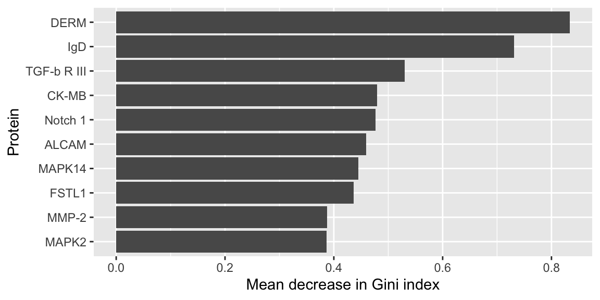

| Protein |
|---|
| DERM |
| FSTL1 |
| IgD |
PSTAT197A Fall 2026
UCSB
Module 1 template repository uploaded to GitHub organization
Brief review: selecting proteins and fitting a classifier
Interpreting the resulting classification accuracy
Guest session: cloud computing setup
Last time, we combined predictions from trees using a majority vote.
Each tree uses a bootstrap sample of observations
At each split, consider a random subset of predictors
Combine predictions across many trees
For the biomarker analysis, we also use the forest to rank proteins by variable importance.
Gini importance summarizes the reduction in node impurity attributed to each predictor across the forest.

For this example, compare the top 10 proteins from:
multiple testing, ranked by adjusted p-value
random forest variable importance
\[ \hat{S}^* = \hat{S}_{\text{testing}} \cap \hat{S}_{\text{forest}} \]
| Protein |
|---|
| DERM |
| FSTL1 |
| IgD |
Let \(Y_i = 1\) indicate ASD and \(Y_i = 0\) indicate TD.
\[ \log\left(\frac{p_i}{1-p_i}\right) = \beta_0 + \beta_1 x_{i1} + \cdots + \beta_p x_{ip} \]
Predictors: proteins in the selected panel
Output: estimated probability of ASD
Classification rule for this example: predict ASD when \(\hat{p}_i > 0.5\)
The modeling function is the same whether we include one protein or several.
| TD | ASD | |
|---|---|---|
| TD | 57 | 21 |
| ASD | 17 | 59 |
Sensitivity: proportion of ASD observations classified as ASD
Specificity: proportion of TD observations classified as TD
Accuracy: proportion of all observations classified correctly
| .metric | .estimate |
|---|---|
| sensitivity | 0.776 |
| specificity | 0.731 |
| accuracy | 0.753 |
These are training results. We used these observations to select proteins, fit the model, and calculate accuracy.
To evaluate predictions for new subjects, repeat preprocessing and protein selection within the training portion of each split, then evaluate on held-out observations.
Guest lecture material to be added here.
Cloud computing: hands-on use
Variable selection via regularized estimation
Design assessment of the Hewitson analysis
Section this week: office hours for setup troubleshooting and questions.
PSTAT197A Fall 2026